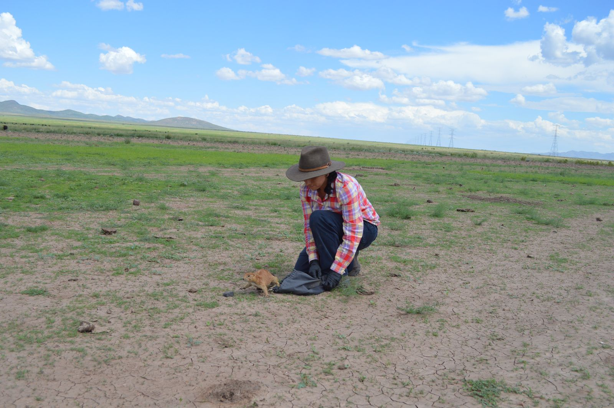
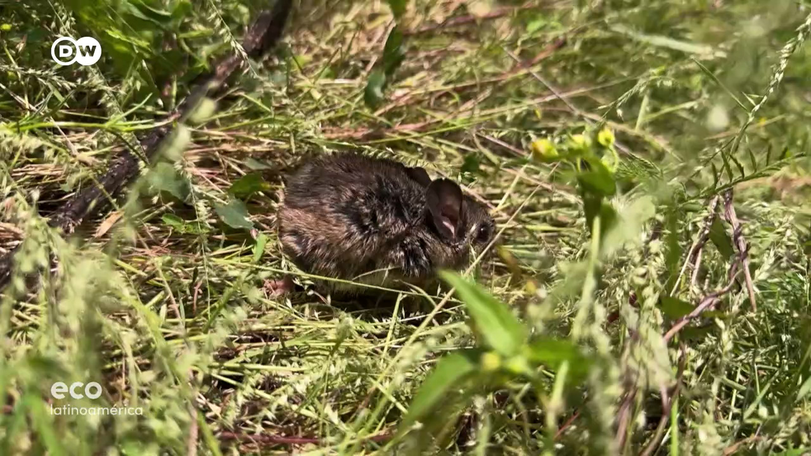
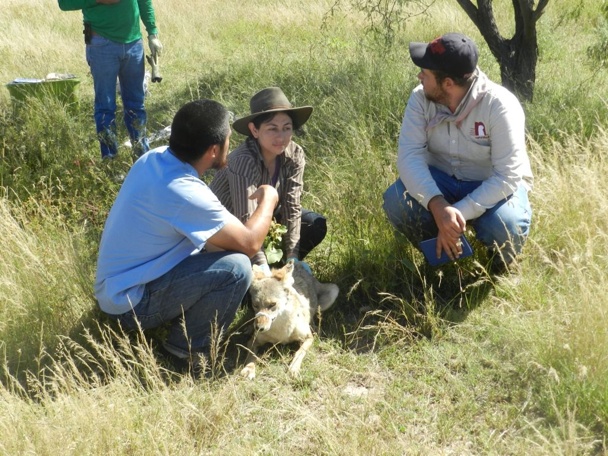

EQUIPO DE TRABAJO

Estudiantes
Montserrat Elemi García Hernández
Genómica viral, epidemiología molecular
El Laboratorio de Virus Emergentes y Una Salud de la Facultad de Medicina Veterinaria y Zootecnia investiga la diversidad, ecología y dinámica evolutiva de virus con potencial zoonótico en sistemas silvestres, animales de producción y humanos.

Analizamos cómo los cambios en el uso de suelo y la perturbación de ecosistemas influyen en la circulación viral.

Estudiamos la diversidad viral en fauna silvestre y animales de producción.

Evaluamos el riesgo zoonótico y la dinámica de virus emergentes en la interfaz humano-animal.


CIORGANISMOS-2025-39